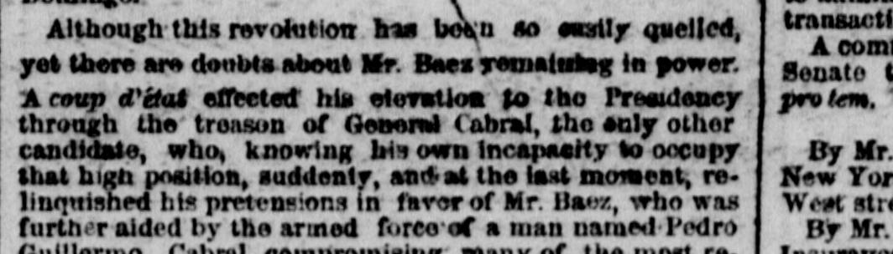
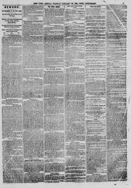

A reap d'etat effected hi elevation to tho 1 "residency throughUn golpe de Estado efectuó su elevación a la Presidencia a través de
The New York Herald. New York [N.Y.], January 30, 1866. Page 5. View the originalVer el original


See the full pageVer la página completaBased on the provided excerpt, the newspaper reported that Mr. Baez attained the presidency through a coup d'état aided by General Cabral's relinquishment of pretensions and the armed force of Pedro Guillermo, though the majority of the nation opposed his administration. The report notes that Baez remained a Field Marshal in the pay of Spain during the struggle for independence, only resigning after the Spanish evacuation, and that his current government is persecuting and imprisoning political opponents following a recent attempt to overthrow his power at Puerto Plata.A tenor del extracto periodístico, el rotativo expuso que el Sr. Báez accedió a la presidencia mediante un cuartelazo apuntalado por la renuncia a sus pretensiones del general Cabral y la fuerza armada de Pedro Guillermo, pese al rechazo mayoritario de la ciudadanía hacia su gestión. La noticia subrayaba que Báez conservó el rango y sueldo de mariscal de campo de España durante toda la gesta independentista, renunciando únicamente tras la evacuación peninsular, y que su actual gobierno encarcelaba y perseguía a contradictores políticos tras una reciente tentativa golpista en Puerto Plata.
FULL TEXT:TEXTO COMPLETO:
Although this revolution has been so easily quelled, yet there are doubts about Mr. Baez remaining in power. A coup d'état effected his elevation to the Presidency through the treason of General Cabral, the only other candidate, who, knowing his own incapacity to occupy that high position, suddenly, and at the last moment, relinquished his pretensions in favor of Mr. Baez, who was further aided by the armed force of a man named Pedro Guillermo, Cabral compromising many of the most re-Aunque esta revolución ha sido sofocada con tanta facilidad, aún existen dudas acerca de la permanencia del Sr. Báez en el poder. Un golpe de Estado efectuó su elevación a la Presidencia mediante la traición del general Cabral, el único otro candidato, quien, conociendo su propia incapacidad para ocupar ese alto cargo, de repente, y en el último momento, renunció a sus pretensiones en favor del Sr. Báez, quien fue además auxiliado por la fuerza armada de un hombre llamado Pedro Guillermo, comprometiendo Cabral a muchos de los ciudadanos más respe-